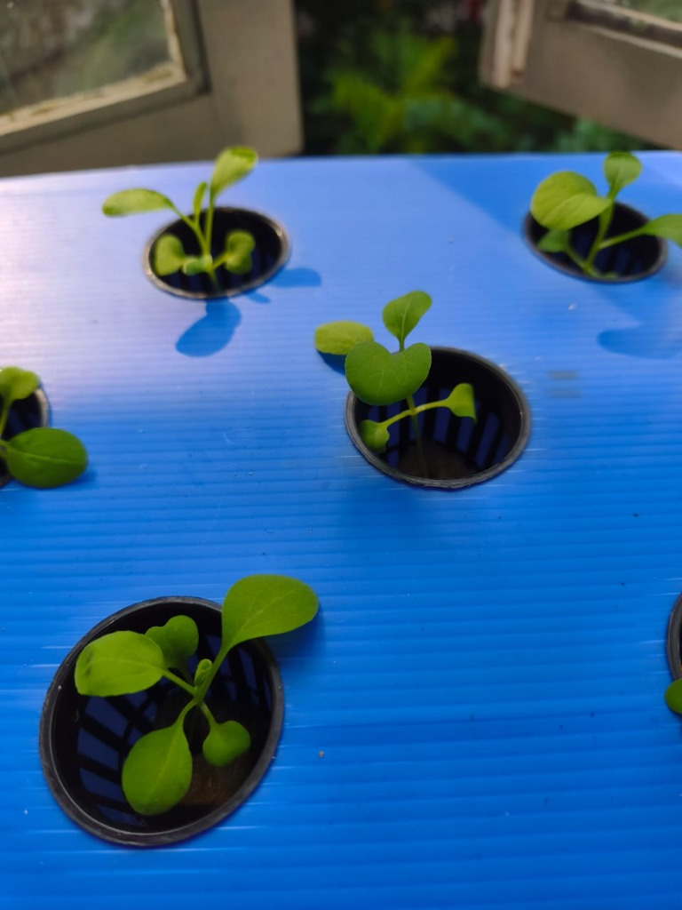
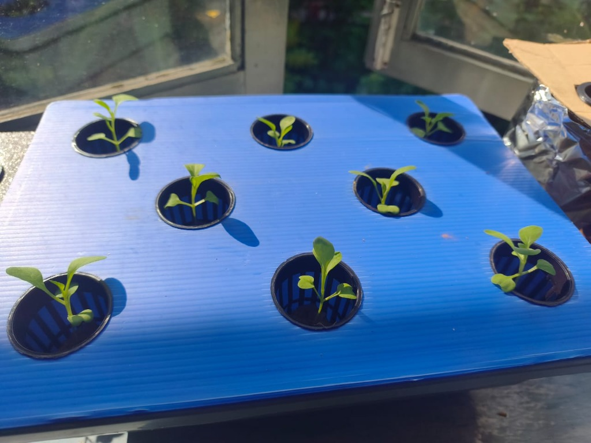

Panduan Menanam Sayur Pak Choy Hijau
Kaedah Kratky (Hidroponik Pasif Tanpa Pam & Elektrik) Menggunakan Alatan Sedia Ada & Penjejak Tumbesaran Harian Pintar
Hari Ke-17 memperlihatkan perkembangan kanopi daun yang semakin tebal dan lebar! Kesemua 11 anak pokok Pak Choy di ketiga-tiga unit takung (8 pokok takung biru 3L, 2 balang kaca foil bertutup kadbod, dan 1 bekas hitam) berkembang mantap tanpa sebarang simptom kutilang mahupun klorosis daun. Air takung telah susut semulajadi membentuk zon akar udara (oxygen air gap) yang membekalkan oksigen secara pasif kepada respirasi akar. Berikut 4 panduan tindakan anda hari ini:
Daun #4–#6 Berkembang & Roset Mula Terbentuk
Daun sejati ke-4 dan ke-5 telah melebar dengan urat daun yang jelas, manakala daun ke-6 mula mekar dari pusat pucuk dengan warna hijau zamrud berkilau.
Zon Akar Udara (Air Gap) Berfungsi
Paras larutan yang susut 1.5–2.5 cm adalah normal & penting dalam kaedah Kratky. Jangan tambah air kosong lagi agar zon pernafasan akar tidak tenggelam.
Pusing Takung 180° Waktu Tengah Hari
Putar arah takung 180° menghadap bilik secara berkala agar pokok membesar tegak dan simetri tanpa membongkok ke arah cahaya tingkap.
Kebersihan & Perlindungan Anti-Nyamuk
Pastikan penutup coroplast biru, balutan foil dan kadbod kekal kemas. Tiada cahaya masuk ke larutan baja menjamin takung bebas lumut alga 100%.
Jurnal Bergambar Tumbesaran Anda
Rekod visual & diagnosis AI pintar mengikut perkembangan harian semaian anda

Hari Ke-17 • Fasa Kanopi & Zon Akar Udara Kratky Mantap (11/11 Pokok Subur)Analisis & Diagnosis Pakar AI:
Tumbesaran pada Hari Ke-17 membuktikan konsistensi penjagaan yang amat cemerlang! Kesemua 11 anak pokok Pak Choy menunjukkan pembentukan kanopi daun yang makin lebat dan simetri. Daun sejati ke-4 dan ke-5 telah melebar melampaui rim net pot, manakala daun ke-6 mula mekar dari teras tengah pucuk membentuk formasi roset pak choy mini.
Keberkesanan Kaedah Kratky: Selepas 5–6 hari berada dalam takung takungan nutrien, paras air yang susut secara perlahan telah mewujudkan oxygen air zone (zon akar udara) yang sempurna. Akar atas kini menyerap oksigen atmosfera secara pasif, sementara akar bawah menghisap air nutrien baja AB. Tiada sebarang tanda reput akar (root rot) mahupun kekurangan kalsium (tip burn).
Tindakan Wajib & Checklist Hari Ke-17:
- 📸 Dokumentasi Hari Ke-17 Lengkap: Foto 5 sudut utama (takung biru, sudut perspektif, makro daun, bekas hitam, dan balang kadbod) telah dirakam dan dianalisis.
- ☀️ Pantau Pertumbuhan Tegak: Daun tidak memanjang melidi (kutilang), membuktikan sinaran cahaya pagi tepi tingkap sangat mencukupi.
- 🔄 Pusing Takung 180°: Putar takung 180° setiap tengah hari agar kanopi daun membesar seimbang tanpa condong sebelah ke arah tingkap.
- 💨 KEKALKAN Ruang Udara: JANGAN tambah air takung jika paras masih mencukupi (>30%) agar zon pernafasan akar tidak tenggelam.
- 🦟 Pemeriksaan Kerapatan Takung: Pastikan penutup coroplast, balutan foil dan kadbod kekal kemas melindungi takung daripada jentik-jentik.

Hari Ke-15 • Fasa Vegetatif Pesat (EC 754–824 µS/cm • Serapan Baja Aktif)Analisis & Diagnosis Pakar AI:
Prestasi tumbesaran pada Hari Ke-15 adalah 100% cemerlang dan mengagumkan! Pemerhatian visual membuktikan kesemua 11 anak pokok Pak Choy telah melepasi fasa adaptasi sepenuhnya dan kini memecut ke dalam fasa vegetatif pesat (rapid vegetative expansion).
Analisis Bacaan EC Meter: Ujian EC hari ini menunjukkan bacaan 754 µS/cm (Bekas 1 & 2 - Takung Biru 8 pokok) dan 820–824 µS/cm (Bekas 3 & 4 - Balang Kaca & Bekas Hitam). Penurunan daripada bancuhan awal (~944–966 µS/cm) adalah petunjuk saintifik bahawa sistem perakaran sedang menyerap ion garam nutrien baja (N, P, K, Ca, Mg) secara pantas melebihi kadar sejatan air. Pokok berselera tinggi dan subur!
Tindakan Wajib & Checklist Hari Ke-15:
- 📊 Pemantauan EC Selesai: Rekod bacaan 754 (Bekas 1&2), 824 (Bekas 3), dan 820 (Bekas 4) telah disahkan sihat dan stabil.
- ☀️ Fotosintesis Cahaya Pagi: Dedahan cahaya tepi tingkap 7:30–11:30 pagi mengekalkan warna hijau gelap tanpa simptom kutilang.
- 💧 Biarkan Zon Udara Terbentuk: JANGAN tambah air kosong hari ini jika susutan <25% agar ruang udara oksigen akar tidak terjejas.
- 🔄 Pusing Takung 180°: Pusingkan takung menghadap dalam bilik waktu tengah hari agar pokok membesar seimbang tanpa condong.
- 🦟 Semak Kerapatan Penutup: Pastikan penutup coroplast, aluminium foil balang dan kadbod kekal rapat mengelak nyamuk.
 Hari Ke-13 • Balang Kaca Dibalut Aluminium Foil & Penutup Kadbod (Kalis Lumut 100%)
Hari Ke-13 • Balang Kaca Dibalut Aluminium Foil & Penutup Kadbod (Kalis Lumut 100%)
Analisis & Diagnosis Pakar AI:
Syabas atas tindakan yang pantas dan tepat! Pada Hari Ke-13, anda telah menyempurnakan langkah kritikal dengan membalut kedua-dua balang kaca menggunakan aluminium foil dan penutup kadbod tebal. Ini menghalang penembusan cahaya matahari 100% ke dalam air baja AB, sekali gus melumpuhkan risiko pertumbuhan lumut hijau (algae) yang biasanya mencuri baja serta oksigen akar.
Perhatikan kesemua 11 anak pokok di ketiga-tiga unit takung: tiada sebarang tanda 'transplant shock' (kejutan pemindahan)! Anak pokok tidak layu, daun kotiledon kekal hijau cerah, dan daun sejati ke-3 serta ke-4 mula mekar melebar. Ini membuktikan formulasi baja takung (~944–966 µS/cm) dan paras air yang disediakan sangat serasi dengan sistem akar anak pokok!
Tindakan Wajib & Checklist Hari Ke-13:
- 🛡️ Balutan Kalis Cahaya Sempurna: Balang kaca telah dibalut dengan aluminium foil dan bertutup kadbod rapi untuk menyekat lumut.
- 🪴 Sifar Kejutan Pemindahan (Zero Shock): Kesemua 11 anak pokok berdiri tegap dan segar selepas 24 jam di takung baharu.
- ☀️ Fotosintesis Cahaya Pagi: Pendedahan di tepi tingkap diteruskan bagi memacu pembentukan klorofil daun.
- 💧 Biarkan Air Susut Semulajadi: JANGAN tambah air takung sekarang! Biarkan paras larutan surut sedikit (1–2 cm) sepanjang 3–5 hari akan datang bagi membina ruang zon akar udara (oxygen air gap).
- 🦟 Periksa Rapatan Penutup: Pastikan kadbod dan penutup coroplast tiada celah longgar untuk mengelakkan nyamuk bertelur dalam air baja.
 Hari Ke-12 • Semua Pindah Ke Takung Kratky (Takung 3L, Bekas Hitam & Balang)
Hari Ke-12 • Semua Pindah Ke Takung Kratky (Takung 3L, Bekas Hitam & Balang)
Analisis & Diagnosis Pakar AI:
Tahniah atas penjagaan yang konsisten! Pada Hari Ke-11, anak pokok Pak Choy anda telah melangkah masuk ke fasa vegetatif awal dengan jayanya. Daun sejati (true leaves) kini sudah mencapai 3 hingga 4 helai dengan urat daun yang jelas dan tepi berombak sihat. Ketinggian pokok stabil sekitar 5.5 – 7.5 cm dan batang tidak membengkok lemah. Akar-akar putih aktif mula kelihatan menjalar di dasar kiub rockwool menyerap air baja. Ini adalah indikator terbaik bahawa anak benih sudah cukup kuat untuk dipindahkan ke sistem takung hidroponik Kratky dalam 1 hingga 3 hari akan datang!
Tindakan Wajib & Checklist Hari Ke-11:
- ✂️ Penjarangan (Thinning) Segera: Beberapa kiub (terutamanya kiub tengah depan dan kiri depan) masih mengandungi 2 anak pokok. Pilih 1 pokok yang paling tegap & segar, kemudian gunting pokok kedua di paras pangkal rockwool menggunakan gunting kecil. Jangan tarik/cabut dengan tangan untuk mengelakkan kerosakan akar pokok utama!
- 🪴 Pemindahan Pertama Selesai: 1 anak pokok telah berjaya dipindahkan ke net pot Kratky dengan larutan 966 µS/cm dan aras air dasar yang tepat.
- 💧 Kelembapan Rockwool Sempurna: Larutan baja di dasar bekas diserap secara konsisten melalui daya kapilari tanpa melemaskan zon leher pokok.
- ☀️ Fotosintesis Cemerlang: Pendedahan cahaya matahari pagi di tepi tingkap diteruskan dan memberikan rona hijau daun yang sangat sihat.
 Hari Ke-7 • Mula Baja AB (432 µS/cm) & Daun Sebenar Kembang
Hari Ke-7 • Mula Baja AB (432 µS/cm) & Daun Sebenar Kembang
Analisis & Diagnosis Pakar AI:
Visual Hari Ke-7 menunjukkan transformasi yang mengagumkan! Anak pokok berdiri tegap dengan ketinggian purata 4.0 – 5.5 cm. Pucuk daun sejati (true leaf) pertama dan kedua kini semakin melebar di tengah roset cotyledon. Penyusunan kiub rockwool dalam bekas lutsinar dengan lapisan larutan baja AB cetek (paras 1–2mm) di dasar adalah langkah bottom feeding yang sangat tepat — kiub rockwool kekal lembap menyerap nutrien tanpa melemaskan zon perakaran atas.
Checklist Rutin Hari Ke-7:
- Pembajaan Pertama Diberikan: Larutan baja AB dengan bacaan 432 µS/cm berjaya dimasukkan ke dasar bekas.
- Pendedahan Cahaya Semulajadi: Lokasi tepi tingkap terbuka membekalkan udara segar dan cahaya matahari yang mencukupi.
- Pusing Bekas 180 Darjah: Pusingkan bekas menghadap bilik petang ini supaya batang tidak condong ke arah tingkap sahaja.
- Periksa Paras Baja Esok Pagi: Jika air di lantai bekas kering diserap rockwool, tambah sedikit baki bancuhan baja (1-2mm sahaja).
 Hari Ke-6 • Daun Sebenar Mula Muncul
Hari Ke-6 • Daun Sebenar Mula Muncul
Analisis & Diagnosis Pakar AI:
Tahniah! Pokok anda kini berjaya memasuki fasa transisi vegetatif. Di bahagian tengah antara dua daun lembaga berbentuk hati, pucuk daun sejati (true leaf) yang pertama telah mula membesar dengan corak tepi yang khas. Batang pokok membesar dengan padat, berjarak ruas pendek, membuktikan ia mendapat kuantiti cahaya matahari pagi yang sangat seimbang tanpa sebarang masalah etiolasi (melidi).
Checklist Rutin Hari Ke-6:
- Cahaya matahari pagi diteruskan: Pokok menunjukkan respon fotosintesis yang sangat sihat di tepi tingkap.
- Mula bancuhan Baja AB dos rendah: Campurkan 1.5 – 2.0 ml pati A & B ke dalam 1L air bersih (250–350 PPM), tuang di dasar bekas semaian.
- Pusing bekas 180 darjah: Teruskan rutin harian ini setiap tengah hari supaya batang pokok tegak simetri ke atas.
- Tinjau kiub berkembar: Perhatikan kiub yang ada 2 anak pokok. Sedia gunting kecil tajam untuk penjarangan pada Hari 7–8.
 Hari Ke-4 • Tepi Tingkap
Hari Ke-4 • Tepi Tingkap
Analisis & Diagnosis Pakar AI:
Anak pokok anda melepasi fasa percambahan dengan sangat memuaskan. Langkah meletakkannya di tepi tingkap berjemur cahaya pagi secara langsung berjaya menyekat etiolasi (pokok melidi) dan membolehkan klorofil aktif bekerja.
Checklist Rutin Hari Ke-4:
- Didedahkan ke cahaya matahari pagi: Sedang berjalan dengan cemerlang di tepi tingkap.
- Pusing bekas 180 darjah: Mengelakkan batang pokok melengkung sebelah arah sahaja.
- Periksa paras air di dasar bekas: Kiub rockwool kekal lembap dan segar.
 Hari Ke-3 • Mula Pecah Benih
Hari Ke-3 • Mula Pecah Benih
Analisis & Diagnosis Pakar AI:
Titik-titik tunas hijau halus (sekitar 2–5 mm) baru mula menembusi permukaan lubang kiub rockwool. Biji benih bertindak balas dengan baik terhadap kelembapan media semaian. Daun kotiledon masih kuncup rapat. Pendedahan terus ke kawasan bercahaya pada saat ini adalah kunci utama kejayaan semaian!
Catatan Tindakan Hari Ke-3:
- Keluarkan dari tempat gelap: Tindakan tepat mengeluarkan bekas ke tempat terang sebaik sahaja tunas hijau dikesan.
- Kekalkan semburan air paip bersih: Kiub rockwool basah elok di atas lapik kain berjalur.
- Tiada baja diperlukan: Benih masih mempunyai bekalan nutrien asli dalam biji benih.
🌱 Hari Ke-3 (Tunas)
Hari Ke-3: Mula Memecah Benih
Tunas kuncup halus baru menjenguk (~0.3 cm). Daun lembaga masih kuncup rapat dalam lubang kiub rockwool.
☀️ Hari Ke-4 (Berjemur)
Hari Ke-4: Kotiledon Terbuka
Tumbesaran melompat kepada ~2.0 cm. Daun lembaga terbuka lebar menyerap matahari pagi di tepi tingkap.
🌿 Hari Ke-6 (Pucuk Sebenar)
Hari Ke-6: Pucuk Daun Sebenar
Tinggi ~3.5 cm. Daun sejati (true leaf) mula memecah di tengah kotiledon. Batang tegap & bersedia terima baja AB.
🌱 Hari Ke-7 (Baja Awal)
Hari Ke-7: Pembajaan Pertama & Daun Kembang
Tinggi mencecah ~4.5 - 5.5 cm. Daun sejati melebar aktif. Pengenalan baja AB starter (432 µS/cm) secara rendaman dasar 1-2mm.
 🌿 Hari Ke-11 (Daun #3 & #4 Mekar)
🌿 Hari Ke-11 (Daun #3 & #4 Mekar)
Hari Ke-11: Daun Sebenar #3–4 & Sedia Takung
Tinggi mencecah ~5.5 – 7.5 cm. Daun sejati ke-3 & ke-4 kembang mekar. Akar putih menembusi bawah rockwool; sedia untuk penjarangan dan pemindahan ke takung Kratky.
 🛡️ Hari Ke-13 (Foil Kalis Lumut)
🛡️ Hari Ke-13 (Foil Kalis Lumut)
Hari Ke-13: Kratky Mantap & Balutan Foil
Semua 11 pokok selamat beradaptasi tanpa kejutan pindah. Balang kaca siap dibalut aluminium foil & kadbod kalis lumut; takung biru 8 pokok segar mekar memasuki fasa vegetatif pesat.
Hari Ke-15: Daun #4–#5 Mekar & Serapan Baja Aktif
Kesemua 11 pokok membesar dengan sangat rancak! Ujian EC membuktikan serapan nutrien giat (EC susut ke 754–824 µS/cm) dengan kanopi daun makin melebar dan tegak simetri.
Hari Ke-17: Kanopi Daun #4–#6 & Zon Akar Udara
11/11 pokok semakin rimbun dan subur! Daun ke-4 hingga ke-6 melebar dengan tekstur hijau zamrud berkilau. Zon akar udara terbentuk semulajadi di bawah net pot tanpa sebarang reput akar.
Jadual & Fasa Tumbesaran Pak Choy
Penjarangan (1 pokok 1 net pot) selesai sepenuhnya tanpa sebarang kerosakan akar. Kesemua 11 pokok berjaya dipindahkan ke dalam takung hidroponik Kratky (takung biru 3L 944 µS/cm, bekas hitam 966 µS/cm, dan 2 balang kaca bertutup foil kalis lumut).
Status Terkini (Hari Ke-17): Pokok kini memecut dalam fasa vegetatif lanjutan. Daun sejati #4, #5 dan tunas #6 makin lebar serta padat mula membentuk roset mini, manakala zon akar udara (oxygen air gap) berfungsi secara optimum membekalkan pernafasan akar tanpa sebarang penyakit.
- Biarkan Zon Akar Udara Berfungsi: Jangan tambah air takung sekarang jika paras air masih >30%! Kaedah Kratky memerlukan zon ruang udara ini agar akar tidak lemas.
- Kekalkan Cahaya Pagi: Pendedahan 4–6 jam sinaran matahari pagi di tepi tingkap mengekalkan internod pendek dan warna hijau zamrud padat.
- Jangkaan Tuai: Pak Choy akan terus membesar berganda-ganda saiznya dalam masa 1.5–2.5 minggu akan datang dan sedia dituai pada Hari ke-28 hingga ke-35 (baki ~11–18 hari lagi).
Peralatan Anda & Fungsinya
Biji Benih Pak Choy Hijau
Benih berkualiti tinggi, percambahan pantas 24–48 jam.
Rockwool
Media semaian pegang kelembapan & sokong akar.
Baja A & B Cecair (Formula Sayur Daun)
Pati cecair siap guna khas untuk daun hijau tebal & batang rangup.
EC / TDS Meter (EDM)
Ukur kepekatan garam mineral/baja dalam air.
pH Meter
Pastikan asid-alkali air tidak menyekat serapan nutrien.
Net Pot & Bekas Takungan (Container)
Pemegang pokok & takungan larutan nutrien kedap cahaya.
Panduan Khas: Baja AB Cecair (Leafy Greens) Anda
Baja A & B cecair yang anda beli adalah formula sedia ada (ready-to-mix concentrate) yang sangat mesra pengguna kerana anda tidak perlu membancuh serbuk terlebih dahulu.
💧 Cara Penggunaan Botol Cecair
- Goncang Botol Dahulu: Sebelum guna, goncang botol A dan botol B supaya mendakan mineral larut sekata.
- Gunakan Picagari (Syringe) / Penutup Berasingan: Jangan celup alat penyukat yang sama dari botol A ke dalam botol B untuk elak pencemaran silang.
- Nisbah Asas: 5ml Cecair A + 5ml Cecair B bagi setiap 1 Liter air (anggaran menghasilkan EC ~1.5 - 1.8 mS/cm).
📦 Cara Penyimpanan & Pantang Larang
- Jangan Campur Pekat Terus: Jangan sekali-kali tuang Pati A terus bercampur Pati B tanpa air!
- Tempat Sejuk & Gelap: Simpan pada suhu bilik dan elakkan daripada terkena cahaya matahari langsung.
- Jangka Hayat: Boleh bertahan lebih 1 hingga 2 tahun jika disimpan dengan betul.
Panduan Lengkap: Cara Membaja Bekas Semaian (Peringkat Daun Sebenar)
Panduan sukatan tepat, teknik bancuhan, dan kaedah rendaman dasar (bottom feeding) tanpa merosakkan akar halus
📏 1. Berapa Sukatan Yang Diperlukan? (Starter Dose)
Untuk anak benih berumur 7–10 hari yang baru keluar daun sejati, gunakan bancuhan nipis (separuh dos):
- Air Bersih (Paip / Tapis): 1 Liter
- Pati Cecair A: 2.0 ml – 2.5 ml
- Pati Cecair B: 2.0 ml – 2.5 ml
- Sasaran EC: 0.6 – 0.8 mS/cm (~300 – 450 ppm / µS/cm)
🥣 2. Cara Bancuh Step-by-Step
- Sediakan 1L Air: Tuang 1 Liter air bersih ke dalam botol mineral atau bekas bancuhan berasingan.
- Goncang & Masukkan Pati A: Goncang botol A, sedut 2.0 – 2.5 ml menggunakan picagari, masukkan ke dalam air, lalu kacau sehingga larut sekata.
- Bilas & Masukkan Pati B: Goncang botol B, sedut 2.0 – 2.5 ml menggunakan picagari bersih/berasingan, masukkan ke dalam air bancuhan, dan kacau sebati.
- Ukur Bacaan: Celupkan EC/TDS meter anda. Bacaan sekitar 400–500 µS/cm atau 300–450 ppm adalah sempurna.
💧 3. Cara Letak Dalam Bekas Semaian (Rendaman Dasar)
- Tuang di Lantai/Dasar Bekas: Tuangkan larutan baja nipis ke bahagian dasar bekas semaian pada paras cetek 1 – 2 mm sahaja.
- Tarikan Kapilari (Wicking Action): Biarkan tapak kiub rockwool menyedut air baja naik ke atas secara semulajadi.
- Elak Siram Dari Atas: Jangan curah air baja terus di atas pucuk dan daun anak pokok kerana daun mudah patah atau lecur terkena matahari terik.
- Jangan Tenggelamkan Kiub: Kiub rockwool hanya perlu menyentuh sedikit air di dasar. Zon atas kiub mesti ada udara untuk respirasi akar.
🔬 4. Memahami Bacaan Meter (Contoh: 432 µS/cm)
Apabila anda mengukur larutan semaian dan mendapat bacaan 432:
Panduan Pengurusan & Bila Perlu Naikkan Nilai EC (Kaedah Kratky)
Ketahui tanda fizikal pokok, fasa umur yang tepat, dan teknik 'Top Up' tanpa melemaskan akar udara
⏱️ 1. Bila Masa Tepat Untuk Naikkan EC? (Hari Ke-18 – 20)
Naikkan kepekatan baja ke paras matang (1.4 – 1.8 mS/cm atau 1400 – 1800 µS/cm) apabila anda melihat 3 tanda utama ini:
- 5–6 Daun Sebenar: Pokok sudah mempunyai 5 hingga 6 helai daun sejati yang lebar, tebal dan bertingkat padat.
- Akar Putih Menjalar Panjang: Akar putih sudah terjuntai keluar dari celah net pot sekurang-kurangnya 3 – 5 cm ke dalam air takung.
- Paras Air Susut: Air dalam takung telah susut antara 30% hingga 50% daripada paras asal.
💧 2. Peraturan Emas 'Top Up' Baja Dalam Kaedah Kratky
Dalam kaedah Kratky, JANGAN curah pati baja pekat sesuka hati ke dalam takung setiap hari. Ikuti langkah selamat ini:
- Bancuh Berasingan: Sediakan bancuhan air baja baharu dalam botol/bekas lain pada sasaran 1.4 – 1.6 mS/cm (1400–1600 µS/cm).
- ⚠️ Hanya Isi Setakat Separuh (50%): JANGAN isi air sampai penuh ke dasar net pot semula! Isi setakat separuh takung sahaja.
- Jaga Zon Akar Udara (Air Gap): Bahagian atas akar wajib terdedah kepada udara untuk pernafasan oksigen. Jika diisi penuh, pokok akan lemas dan reput akar!
📋 Jadual Lengkap Nilai EC Mengikut Peringkat Umur Pak Choy
🔍 Tip Menguji & Membaca Meter Semasa Rutin Mingguan:
Pokok "makan" nutrien lebih pantas berbanding air. Boleh sediakan sedikit bancuhan baja baharu untuk kembalikan ke paras ~1,200 – 1,400 µS/cm.
Pada hari cuaca panas terik, pokok "minum" air dengan laju menyebabkan garam baja menjadi pekat. Cukup sekadar tambah air paip kosong tanpa baja.
Kalkulator Anggaran Bancuhan Baja AB
Masukkan kapasiti air takungan anda untuk mengira anggaran sukatan stok pati Baja A & B yang diperlukan mengikut peringkat tumbuhan.
Soalan Lazim & Masalah Fasa Semaian
Rutin Harian & Mingguan
☀️ Rutin Harian (1-2 Minit)
- Semak Serangga Perosak: Periksa bawah daun dari serangan ulat hijau, kutu trip, atau lalat putih.
- Periksa Kelesuan Daun: Jika daun layu waktu tengah hari panas terik, sediakan jaring teduhan (shade net 30-50%).
- Pastikan Pencahayaan Cukup: Pastikan pokok terima sekurang-kurangnya 4–6 jam sinaran matahari cerah.
🔬 Rutin Mingguan (5 Minit)
- Ukur EC & pH: Suhu panas membuatkan pokok minum air lebih laju berbanding baja, jadi nilai EC mungkin meningkat. Tambah air jika EC > 2.0.
- Semak Paras Air: Pastikan akar mencecah air tetapi tinggalkan ruang udara (jangan isi sampai limpah).
- Kesihatan Akar: Akar sihat berwarna putih bersih. Jika akar coklat berlendir & berbau busuk, ia tanda reput akar (*root rot*).